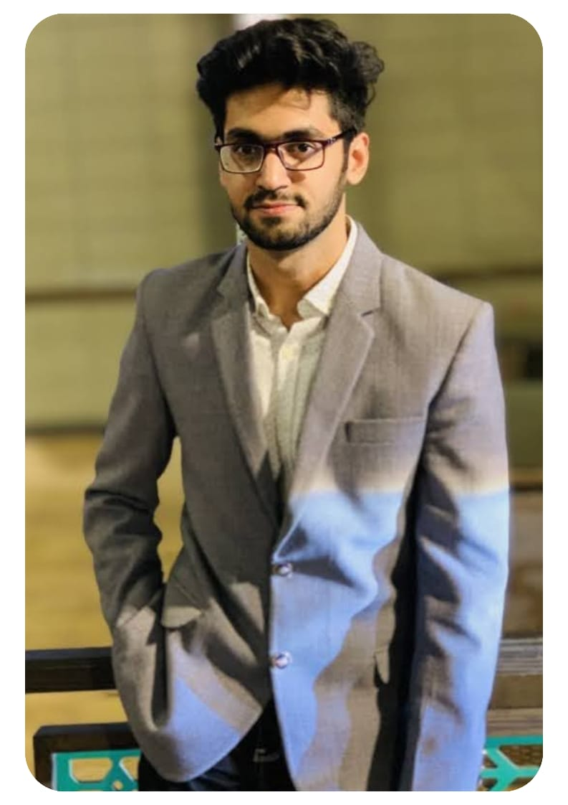

|
Asad Wali I am a Robotics and AI Software Engineer specializing in AI research projects and web development. I am working at ITechia Solutions in Pakistan, where I lead a small team that mostly works on Research Ideas. I hold a Master’s degree in Computer Science with a focus on AI from PUCIT, where I developed an optimized ensemble model for the classification and detection of retinal diseases using OCT images. During my studies, I worked with medical image datasets, focusing on image preprocessing techniques to improve the quality and accuracy of image analysis. I also worked with sensory datasets for human activity recognition (HAR). In addition to my AI expertise, I have hands-on experience in Robotics Simulation. I have worked on several ROS projects using CoppeliaSim and Gazebo Simulator, and have applied my knowledge to work with Drone and UAV robots in a variety of applications. |
 |
{kind=link}
Research PublicationsI'm interested in computer vision, machine learning, deep learning, generative AI, large language models (LLM), image processing and Robotics. Most of my research is about on Robotics, Medical Images and Sensory Data. |
|
|
An ensemble deep learning model for OCT Image Detection
and Classification
Asad Wali, Zobia Suhail, Sidra Naz, Iram Younas 2024 This research represent the ensemble techniquie "combination of three different deep learning models" for classifcation the OCT images for retinal diseases. |
|
|
Optical Coherence Tomography (OCT) Image Classification
For Retinal Disease Using Random Forest Classifier
Asad Wali, Zobia Suhail 2024 This paper represent the Machine Learning Technique for detecting and classify the Optical Coherence Tomograpgy (OCT) images using Random Forest Classifer (RFC). |
|
|
Effects of Filters in Retinal Disease Detection on
Optical Coherence Tomography (OCT) Images Using Machine
Learning Classifiers
Asad Wali, Arjun Sipani 2024 This research represent the compariosn of different machine learning techniques and classifers on Retinal Disease using OCT images. |

|
Leveraging ERC20 Crypto Tokens for Business Growth:
Overcoming Regulatory Challenges and Market Monopolies
Asad Wali, Aqsa Maryam 2025 Raytracing constant-density ellipsoids yields more accurate and flexible radiance fields than splatting Gaussians, and still runs in real-time. |

|
Cybersecurity in Cloud Computing: Mitigating Data
Breach Risks
Asad Wali, Aqsa Maryam 2025 project page / arXiv A single model built around diffusion and NeRF that does text-to-3D, image-to-3D, and few-view reconstruction, trains in 1 minute, and renders at 60FPS in a browser. |
Robotics Projects |
|
|
A Collaborative Approach For Map Creation Using Swarm
Robots
Asad Wali 2021 YouTube Link This project shows a collaborative approach for map creation of an unknown environment in Gazebo using SWARM robots. Swarm technique is inspired by ant-colines. By using this technique, I use multiple robots and leave them in an unknown environment and they start generating map. When more than one robots overlap they start merging the map. |
|
|
Walking Simulation of Humanoid Biped Locomotion
Asad Wali 2021 YouTube This project focuses on simulating realistic bipedal locomotion for humanoid robots using CoppeliaSim. Achieving smooth and stable movement involves handling complex physics, including maintaining balance, managing ground contact forces, and ensuring dynamic stability through proper center-of-mass adjustments. The locomotion algorithm relies on inverse kinematics for precise joint control and employs feedback from physics engines to adaptively correct the robot’s posture. Techniques like Zero Moment Point (ZMP) and torque-controlled joints are integrated to improve gait efficiency and prevent falls. |
|
|
Comparison of G-Mapping | Hector Mapping | Cartographer
Mapping ROS Gazebo
Asad Wali 2021 YouTube This project compares three SLAM algorithms—G-Mapping, Hector Mapping, and Cartographer Mapping—using ROS and Gazebo. G-Mapping is reliable for indoor mapping with odometry but struggles in dynamic settings. Hector Mapping offers fast, odometry-free mapping using laser scans, ideal for rapid motion but less accurate in large areas. Cartographer excels in precise 2D/3D mapping with robust loop closure, making it suitable for large-scale, complex environments. The comparison highlights their strengths and trade-offs for different applications. |
|
Website built using source code provided by Jon Barron |